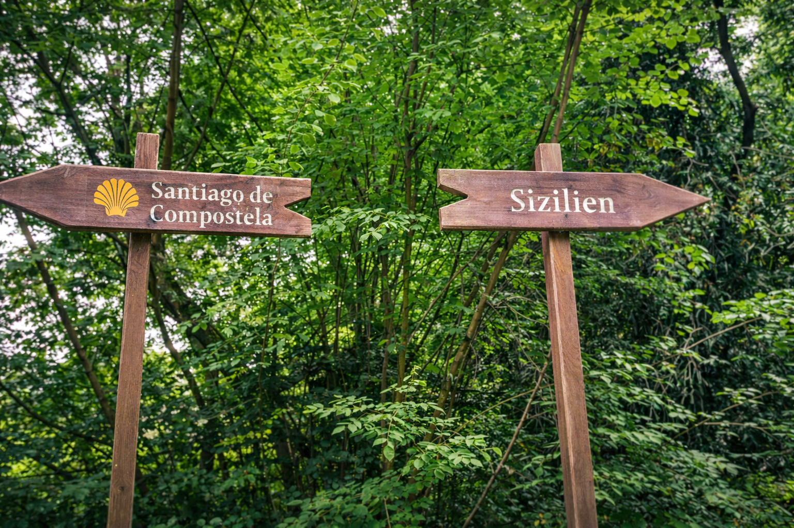
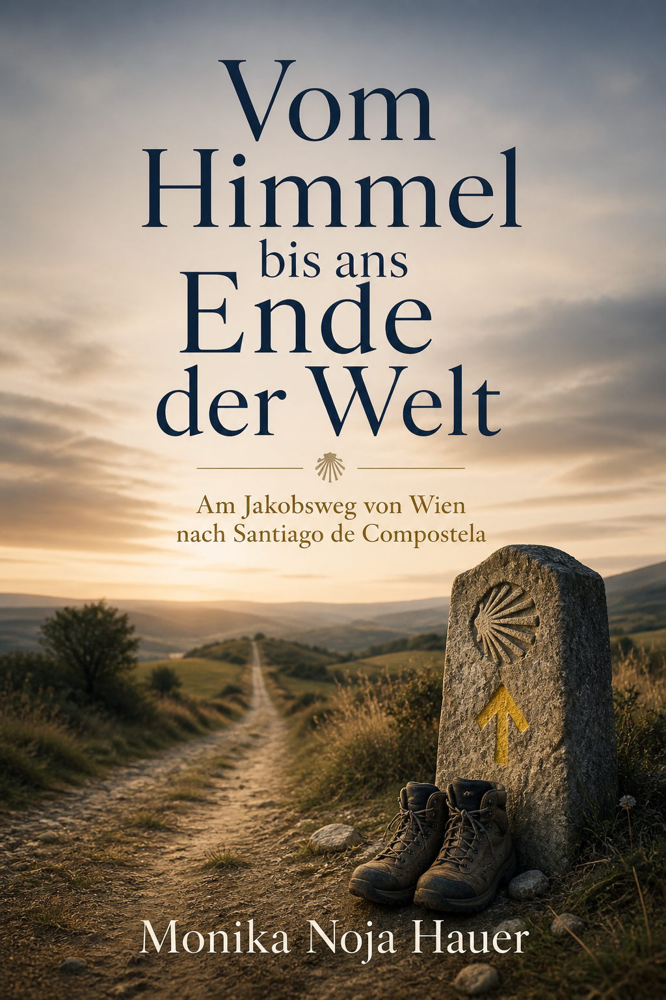
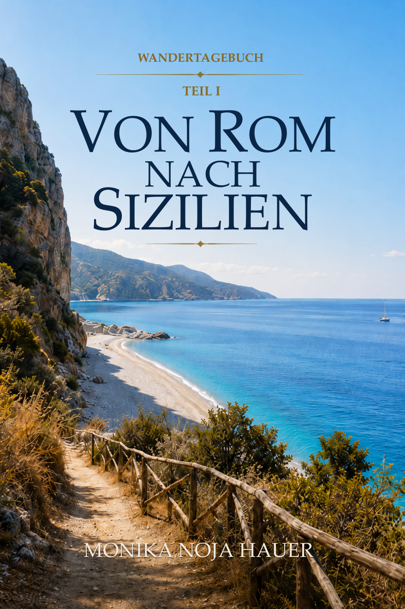

Monika Noja Hauer
Persönliche Pilgertagebücher über lange Wege, Landschaften, Begegnungen und das Weitergehen.
Zu den BüchernMonika Noja Hauer ist seit 2016 zu Fuß unterwegs – mit Zelt, Rucksack und der Bereitschaft, dem Weg zu folgen, auch wenn das Ziel sich unterwegs verändert. Was als spontaner Aufbruch begann, wurde zu einer Pilgerreise über mehr als 3.000 Kilometer bis nach Santiago de Compostela – und zu einem Wendepunkt.
Das Gehen wurde für sie mehr als nur Fortbewegung. Es wurde zu einer Form, das Leben neu zu ordnen, Abschied und Aufbruch durchzustehen, der Natur nahe zu sein und im einfachen Unterwegssein eine neue Freiheit zu entdecken.
Seither ist Monika Noja Hauer weitergegangen: nach Triest, Assisi, Rom und darüber hinaus. Ihre Bücher erzählen nicht vom perfekten Reisen, sondern vom wirklichen Unterwegssein – von Landschaften und Begegnungen, von Zweifel und Mut, von stillen Momenten, von äußerer Strecke und innerer Veränderung.
Eine Auswahl der Wege, die bisher gegangen wurden – Schritt für Schritt, Jahr für Jahr.
Der erste große Aufbruch: 131 Tage allein und mit dem Zelt bis nach Santiago.
Beginn der mehrjährigen Fortsetzung Richtung Italien und Mittelmeer.
Weiter auf dem Weg durch eindrucksvolle Landschaften bis nach Assisi.
Eine weitere Etappe auf dem Franziskusweg bis in das Herz Italiens.
Der Weg führt weiter südwärts – mit Rucksack und Zelt Richtung Sizilien.
Die nächste Pilgerreise ist für Mai und Juni 2026 geplant.
Veröffentlichte Bücher und aktuelle Arbeiten von Monika Noja Hauer.

Am Jakobsweg von Wien nach Santiago de Compostela
131 Tage allein und mit dem Zelt: Monika Noja Hauer erzählt von einer Pilgerreise, die weit mehr ist als eine lange Wanderung. Dieses Pilgertagebuch ist kein Reiseführer, sondern die persönliche Geschichte eines Weges, der im Außen verläuft und zugleich nach innen führt.
Jetzt kaufenVom Mostviertel zum Mittelmeer
Nach ihrer ersten großen Pilgerreise beginnt 2022 eine neue Etappe: vom Mostviertel bis ans Mittelmeer. Dieses persönliche Pilgertagebuch erzählt von Aufbruch, Freiheit, Sehnsucht und dem Mut, dem eigenen Weg weiterzufolgen.
Jetzt kaufenVon Triest nach Assisi
Diese Etappe führt von Triest nach Assisi und ist geprägt von Naturlandschaften, überraschenden Begegnungen, Wetterkapriolen, Stränden und den Erfahrungen eines intensiven Weitergehens.
Jetzt kaufenVon Florenz über Assisi nach Rom
Dieses Pilgertagebuch erzählt von einer Reise auf dem Franziskusweg – von der Schönheit Italiens, von Begegnungen, Landschaften und der Freude am Unterwegssein.
Jetzt kaufen
Outdoor-Wanderreise-Tagebuch
Mit Backpacker-Rucksack und Zelt geht es weiter südwärts. Dieses Buch erzählt von Stränden, Küstenorten, Wind, Weite und dem besonderen Freiheitsgefühl eines Weges von Rom bis Scalea.
Jetzt kaufenDer zweite Teil ist derzeit in Arbeit und entsteht nach der nächsten Pilgerreise im Mai und Juni 2026.
Eindrücke und Wegbilder zu den einzelnen Büchern.